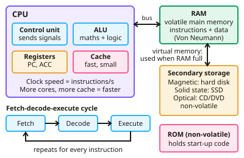

GCSE Computer Science · Topic 3
Computer systems
Computer systems is about what is inside a computer and how hardware and software work together.
We will look at the C P U, the fetch decode execute cycle, memory and storage.
Then we study system software, translators and programming languages, and the logic gates that make decisions.
- 2 subtopics
- 72 questions
- Free: 3.1 notes and 10 questions
In this topic
- 3.1Hardware, the CPU and memoryFree below · 44 questions
- 3.2Software, translators and logicOpen in Full Marks · 28 questions
3.1 · Free notes
Hardware, the CPU and memory

Key points
- The CPU executes instructions using the fetch-decode-execute cycle. Key components include the control unit, ALU (arithmetic logic unit), cache and registers such as the program counter and accumulator.
- Von Neumann architecture stores both data and instructions in the same memory.
- CPU performance depends on clock speed (instructions per second), number of cores (parallel processing) and cache size (fast access to frequently used data).
- RAM is volatile main memory holding running programs and data; ROM is non-volatile and holds start-up instructions.
- Virtual memory uses secondary storage when RAM is full. Secondary storage types: magnetic (hard disks), solid state (SSD, flash) and optical (CD/DVD).
In more detail
- Worked fetch–decode–execute: PC holds 100 → copied to the MAR → the instruction at 100 is fetched into the MDR, then the CIR → PC becomes 101 → the CU decodes it → the ALU executes it.
- Worked clock speed: 3.2 GHz means 3.2 billion clock cycles every second.
- Worked cores: a quad-core CPU is not 4 times faster if the software cannot be split into tasks that run at the same time.
- Worked cache: cache is faster but much smaller than RAM; L1 cache is the fastest and smallest, then L2, then L3.
- Worked virtual memory: with 4 GB of RAM and many apps open, data is swapped to the SSD, which slows the computer down.
Practice
Hardware, the CPU and memory: 10 questions
Pick an answer to check it, or open the answer for the explanation.
1. What are the stages of the CPU cycle?
- Input, process, output
- Fetch, decode, execute
- Load, run, save
- Read, write, erase
Show answer
B: Fetch, decode, execute. This cycle repeats for every instruction.
2. What is the difference between RAM and ROM?
- RAM is volatile; ROM is non-volatile
- ROM is volatile; RAM is not
- They are identical
- RAM stores only images
Show answer
A: RAM is volatile; ROM is non-volatile. RAM loses its contents when power is lost.
3. What does increasing cache size usually do?
- Slows the CPU
- Speeds up access to frequently used data
- Reduces clock speed
- Increases power use only
Show answer
B: Speeds up access to frequently used data. Cache is much faster than main memory.
4. What is a characteristic of solid state storage?
- It has moving parts
- No moving parts, fast access and durable
- It is only optical
- It is volatile
Show answer
B: No moving parts, fast access and durable. SSDs are faster and more robust than magnetic hard drives.
5. What does von Neumann architecture mean?
- Data and instructions are stored in separate memory
- Data and instructions are stored in the same memory
- There is no CPU
- Only ROM is used
Show answer
B: Data and instructions are stored in the same memory. This is the basis of most modern computers.
6. What is the purpose of cache memory?
- Permanent storage
- Fast storage of frequently used instructions and data close to the CPU
- Backup storage
- Network storage
Show answer
B: Fast storage of frequently used instructions and data close to the CPU. It reduces the time spent waiting for main memory.
7. What is virtual memory?
- Extra RAM chips
- Secondary storage used as an extension of RAM when it is full
- Cloud storage
- Cache memory
Show answer
B: Secondary storage used as an extension of RAM when it is full. It is slower than real RAM.
8. What does increasing the number of CPU cores allow?
- Slower processing
- Multiple instructions to be processed simultaneously
- Less memory use
- Higher clock speed automatically
Show answer
B: Multiple instructions to be processed simultaneously. Software must be written to take advantage of it.
9. Which CPU register holds the address of the next instruction to be fetched?
- Cache
- Arithmetic logic unit
- Program counter
- Accumulator
Show answer
C: Program counter. The program counter stores the address of the next instruction and is updated as the cycle runs. The accumulator holds the results of calculations, not addresses.
10. What is the main role of the accumulator in the CPU?
- To permanently store the operating system
- To store the next instruction's address
- To store the results of ALU calculations
- To decode instructions
Show answer
C: To store the results of ALU calculations. The accumulator is a register that temporarily holds data and the results of ALU operations. The program counter holds the next instruction's address.
Keep going in Full Marks
Full Marks has 44 questions on Hardware, the CPU and memory (34 more than here), set out in practice levels. You also get notes and 3D models for all 2 subtopics of Computer systems, plus games, timed exams and past papers.